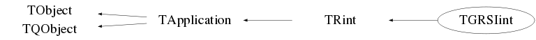

class TGRSIint: public TRint
Function Members (Methods)
public:
| virtual | ~TGRSIint() |
| void | TObject::AbstractMethod(const char* method) const |
| virtual void | TObject::AppendPad(Option_t* option = "") |
| virtual const char* | TApplication::ApplicationName() const |
| static Bool_t | TQObject::AreAllSignalsBlocked() |
| Bool_t | TQObject::AreSignalsBlocked() const |
| Int_t | TApplication::Argc() const |
| char** | TApplication::Argv() const |
| char* | TApplication::Argv(Int_t index) const |
| static Bool_t | TQObject::BlockAllSignals(Bool_t b) |
| Bool_t | TQObject::BlockSignals(Bool_t b) |
| virtual void | TObject::Browse(TBrowser* b) |
| virtual void | TQObject::ChangedBy(const char* method)SIGNAL |
| static TClass* | Class() |
| virtual const char* | TObject::ClassName() const |
| virtual void | TObject::Clear(Option_t* = "") |
| void | TApplication::ClearInputFiles() |
| virtual TObject* | TObject::Clone(const char* newname = "") const |
| void | TQObject::CollectClassSignalLists(TList& list, TClass* cls) |
| virtual Int_t | TObject::Compare(const TObject* obj) const |
| Bool_t | TQObject::Connect(const char* signal, const char* receiver_class, void* receiver, const char* slot) |
| static Bool_t | TQObject::Connect(TQObject* sender, const char* signal, const char* receiver_class, void* receiver, const char* slot) |
| static Bool_t | TQObject::Connect(const char* sender_class, const char* signal, const char* receiver_class, void* receiver, const char* slot) |
| virtual void | TQObject::Connected(const char*) |
| virtual void | TObject::Copy(TObject& object) const |
| static void | TApplication::CreateApplication() |
| virtual void | TObject::Delete(Option_t* option = "")MENU |
| virtual void | TQObject::Destroyed()SIGNAL |
| Bool_t | TQObject::Disconnect(const char* signal = 0, void* receiver = 0, const char* slot = 0) |
| static Bool_t | TQObject::Disconnect(TQObject* sender, const char* signal = 0, void* receiver = 0, const char* slot = 0) |
| static Bool_t | TQObject::Disconnect(const char* class_name, const char* signal, void* receiver = 0, const char* slot = 0) |
| virtual void | TQObject::Disconnected(const char*) |
| virtual Int_t | TObject::DistancetoPrimitive(Int_t px, Int_t py) |
| virtual void | TObject::Draw(Option_t* option = "") |
| virtual void | TObject::DrawClass() constMENU |
| virtual TObject* | TObject::DrawClone(Option_t* option = "") constMENU |
| virtual void | TObject::Dump() constMENU |
| void | TQObject::Emit(const char* signal) |
| void | TQObject::Emit(const char* signal, Long_t* paramArr) |
| void | TQObject::Emit(const char* signal, const char* params) |
| void | TQObject::Emit(const char* signal, Double_t param) |
| void | TQObject::Emit(const char* signal, Long_t param) |
| void | TQObject::Emit(const char* signal, Long64_t param) |
| void | TQObject::Emit(const char* signal, Bool_t param) |
| void | TQObject::Emit(const char* signal, Char_t param) |
| void | TQObject::Emit(const char* signal, UChar_t param) |
| void | TQObject::Emit(const char* signal, Short_t param) |
| void | TQObject::Emit(const char* signal, UShort_t param) |
| void | TQObject::Emit(const char* signal, Int_t param) |
| void | TQObject::Emit(const char* signal, UInt_t param) |
| void | TQObject::Emit(const char* signal, ULong_t param) |
| void | TQObject::Emit(const char* signal, ULong64_t param) |
| void | TQObject::Emit(const char* signal, Float_t param) |
| void | TQObject::EmitVA(const char* signal, Int_t nargs) |
| void | TQObject::EmitVA(const char* signal, Int_t nargs, va_list va) |
| virtual void | TObject::Error(const char* method, const char* msgfmt) const |
| virtual void | TObject::Execute(const char* method, const char* params, Int_t* error = 0) |
| virtual void | TObject::Execute(TMethod* method, TObjArray* params, Int_t* error = 0) |
| virtual void | TObject::ExecuteEvent(Int_t event, Int_t px, Int_t py) |
| static Long_t | TApplication::ExecuteFile(const char* file, Int_t* error = 0, Bool_t keep = kFALSE) |
| TApplication::EExitOnException | TApplication::ExitOnException(TApplication::EExitOnException opt = kExit) |
| virtual void | TObject::Fatal(const char* method, const char* msgfmt) const |
| virtual TObject* | TObject::FindObject(const char* name) const |
| virtual TObject* | TObject::FindObject(const TObject* obj) const |
| virtual TApplicationImp* | TApplication::GetApplicationImp() |
| static TList* | TApplication::GetApplications() |
| TApplication* | TApplication::GetAppRemote() const |
| virtual Option_t* | TObject::GetDrawOption() const |
| static Long_t | TObject::GetDtorOnly() |
| static TEnv* | GetEnv() |
| virtual const char* | TObject::GetIconName() const |
| const char* | TApplication::GetIdleCommand() const |
| TList* | TQObject::GetListOfClassSignals() const |
| TList* | TQObject::GetListOfConnections() const |
| TList* | TQObject::GetListOfSignals() const |
| virtual const char* | TObject::GetName() const |
| virtual char* | TObject::GetObjectInfo(Int_t px, Int_t py) const |
| static Bool_t | TObject::GetObjectStat() |
| virtual Option_t* | TObject::GetOption() const |
| virtual void | GetOptions(int* argc, char** argv) |
| virtual char* | TRint::GetPrompt() |
| TSignalHandler* | TApplication::GetSignalHandler() const |
| virtual const char* | TObject::GetTitle() const |
| virtual UInt_t | TObject::GetUniqueID() const |
| virtual void | TRint::HandleException(Int_t sig) |
| virtual void | TApplication::HandleIdleTimer()SIGNAL |
| virtual bool | HandleTermInput() |
| virtual Bool_t | TObject::HandleTimer(TTimer* timer) |
| virtual Bool_t | TQObject::HasConnection(const char* signal_name) const |
| virtual ULong_t | TObject::Hash() const |
| virtual void | TApplication::Hide() |
| virtual void | TQObject::HighPriority(const char* signal_name, const char* slot_name = 0) |
| virtual void | TApplication::Iconify() |
| virtual void | TObject::Info(const char* method, const char* msgfmt) const |
| virtual Bool_t | TObject::InheritsFrom(const char* classname) const |
| virtual Bool_t | TObject::InheritsFrom(const TClass* cl) const |
| virtual void | TApplication::Init() |
| void | TApplication::InitializeGraphics() |
| TObjArray* | TApplication::InputFiles() const |
| virtual void | TObject::Inspect() constMENU |
| static TGRSIint* | instance(int argc = 0, char** argv = 0, void* options = 0, int numOptions = -1, bool noLogo = false, const char* appClassName = "grsisort") |
| void | TRint::Interrupt() |
| void | TObject::InvertBit(UInt_t f) |
| virtual TClass* | IsA() const |
| virtual Bool_t | TApplication::IsCmdThread() |
| virtual Bool_t | TObject::IsEqual(const TObject* obj) const |
| virtual Bool_t | TObject::IsFolder() const |
| Bool_t | TObject::IsOnHeap() const |
| Bool_t | TApplication::IsRunning() const |
| virtual Bool_t | TObject::IsSortable() const |
| Bool_t | TObject::IsZombie() const |
| virtual void | TApplication::KeyPressed(Int_t key)SIGNAL |
| virtual void | TApplication::LineProcessed(const char* line)SIGNAL |
| static void | TQObject::LoadRQ_OBJECT() |
| virtual void | TApplication::Lower() |
| virtual void | TQObject::LowPriority(const char* signal_name, const char* slot_name = 0) |
| virtual void | TApplication::ls(Option_t* option = "") const |
| void | TObject::MayNotUse(const char* method) const |
| virtual void | TQObject::Message(const char* msg)SIGNAL |
| static void | TApplication::NeedGraphicsLibs() |
| Bool_t | TApplication::NoLogoOpt() const |
| Bool_t | TApplication::NoLogOpt() const |
| virtual Bool_t | TObject::Notify() |
| virtual Int_t | TQObject::NumberOfConnections() const |
| virtual Int_t | TQObject::NumberOfSignals() const |
| void | TObject::Obsolete(const char* method, const char* asOfVers, const char* removedFromVers) const |
| virtual void | TApplication::Open() |
| static void | TObject::operator delete(void* ptr) |
| static void | TObject::operator delete(void* ptr, void* vp) |
| static void | TObject::operator delete[](void* ptr) |
| static void | TObject::operator delete[](void* ptr, void* vp) |
| void* | TObject::operator new(size_t sz) |
| void* | TObject::operator new(size_t sz, void* vp) |
| void* | TObject::operator new[](size_t sz) |
| void* | TObject::operator new[](size_t sz, void* vp) |
| TObject& | TObject::operator=(const TObject& rhs) |
| virtual void | TObject::Paint(Option_t* option = "") |
| virtual void | TObject::Pop() |
| virtual void | TObject::Print(Option_t* option = "") const |
| void | PrintHelp(bool) |
| virtual void | PrintLogo(bool) |
| virtual Long_t | TApplication::ProcessFile(const char* file, Int_t* error = 0, Bool_t keep = kFALSE) |
| virtual Long_t | ProcessLine(const char* line, Bool_t sync = kFALSE, Int_t* error = 0) |
| Bool_t | TApplication::QuitOpt() const |
| virtual void | TApplication::Raise() |
| virtual Int_t | TObject::Read(const char* name) |
| virtual void | TObject::RecursiveRemove(TObject* obj) |
| virtual void | TApplication::RemoveIdleTimer() |
| void | TObject::ResetBit(UInt_t f) |
| Bool_t | TApplication::ReturnFromRun() const |
| virtual void | TApplication::ReturnPressed(char* text)SIGNAL |
| virtual void | TRint::Run(Bool_t retrn = kFALSE) |
| virtual void | TObject::SaveAs(const char* filename = "", Option_t* option = "") constMENU |
| virtual void | TObject::SavePrimitive(ostream& out, Option_t* option = "") |
| void | TObject::SetBit(UInt_t f) |
| void | TObject::SetBit(UInt_t f, Bool_t set) |
| virtual void | TObject::SetDrawOption(Option_t* option = "")MENU |
| static void | TObject::SetDtorOnly(void* obj) |
| virtual void | TRint::SetEchoMode(Bool_t mode) |
| virtual void | TApplication::SetIdleTimer(UInt_t idleTimeInSec, const char* command) |
| static void | TObject::SetObjectStat(Bool_t stat) |
| virtual const char* | TRint::SetPrompt(const char* newPrompt) |
| void | TApplication::SetReturnFromRun(Bool_t ret) |
| virtual void | TObject::SetUniqueID(UInt_t uid) |
| virtual void | TApplication::Show() |
| virtual void | ShowMembers(TMemberInspector&) |
| virtual void | TApplication::StartIdleing() |
| virtual void | TApplication::StopIdleing() |
| virtual void | Streamer(TBuffer&) |
| void | StreamerNVirtual(TBuffer& ClassDef_StreamerNVirtual_b) |
| virtual void | TObject::SysError(const char* method, const char* msgfmt) const |
| virtual int | TabCompletionHook(char*, int*, ostream&) |
| virtual void | TRint::Terminate(int status) |
| Bool_t | TObject::TestBit(UInt_t f) const |
| Int_t | TObject::TestBits(UInt_t f) const |
| virtual void | TObject::UseCurrentStyle() |
| virtual void | TObject::Warning(const char* method, const char* msgfmt) const |
| const char* | TApplication::WorkingDirectory() const |
| virtual Int_t | TObject::Write(const char* name = 0, Int_t option = 0, Int_t bufsize = 0) |
| virtual Int_t | TObject::Write(const char* name = 0, Int_t option = 0, Int_t bufsize = 0) const |
protected:
| static Int_t | TQObject::CheckConnectArgs(TQObject* sender, TClass* sender_class, const char* signal, TClass* receiver_class, const char* slot) |
| static void | TApplication::Close(TApplication* app) |
| static Bool_t | TQObject::ConnectToClass(TQObject* sender, const char* signal, TClass* receiver_class, void* receiver, const char* slot) |
| static Bool_t | TQObject::ConnectToClass(const char* sender_class, const char* signal, TClass* receiver_class, void* receiver, const char* slot) |
| virtual void | TObject::DoError(int level, const char* location, const char* fmt, va_list va) const |
| virtual void* | TQObject::GetSender() |
| virtual const char* | TQObject::GetSenderClassName() const |
| virtual void | TApplication::Help(const char* line) |
| virtual void | TApplication::LoadGraphicsLibs() |
| virtual void | TApplication::MakeBatch() |
| void | TObject::MakeZombie() |
| static TApplication* | TApplication::Open(const char* url, Int_t debug, const char* script) |
| static Int_t | TApplication::ParseRemoteLine(const char* ln, TString& hostdir, TString& user, Int_t& dbg, TString& script) |
| virtual Long_t | TApplication::ProcessRemote(const char* line, Int_t* error = 0) |
| void | TApplication::SetSignalHandler(TSignalHandler* sh) |
private:
| TGRSIint(int argc, char** argv, void* options = 0, int numOptions = 0, bool noLogo = false, const char* appClassName = "grsisort") | |
| void | ApplyOptions() |
| void | DrawLogo() |
| bool | FileAutoDetect(string filename, long filesize) |
| void | InitFlags() |
| void | LoadGROOTGraphics() |
Data Members
public:
| enum TApplication::EStatusBits { | kProcessRemotely | |
| kDefaultApplication | ||
| }; | ||
| enum TApplication::EExitOnException { | kDontExit | |
| kExit | ||
| kAbort | ||
| }; | ||
| enum TObject::EStatusBits { | kCanDelete | |
| kMustCleanup | ||
| kObjInCanvas | ||
| kIsReferenced | ||
| kHasUUID | ||
| kCannotPick | ||
| kNoContextMenu | ||
| kInvalidObject | ||
| }; | ||
| enum TObject::[unnamed] { | kIsOnHeap | |
| kNotDeleted | ||
| kZombie | ||
| kBitMask | ||
| kSingleKey | ||
| kOverwrite | ||
| kWriteDelete | ||
| }; |
public:
| static TGRSIint* | fTGRSIint |
protected:
| TApplication* | TApplication::fAppRemote | Current remote application, if defined |
| TList* | TQObject::fListOfConnections | ! list of connections to this object |
| TList* | TQObject::fListOfSignals | ! list of signals from this object |
| Bool_t | TQObject::fSignalsBlocked | ! flag used for suppression of signals |
| static Bool_t | TQObject::fgAllSignalsBlocked | flag used for suppression of all signals |
| static TList* | TApplication::fgApplications | List of available applications |
private:
| bool | fAutoSort | |
| bool | fFragmentSort | |
| static TEnv* | fGRSIEnv | |
| bool | fMakeAnalysisTree | |
| bool | fPrintHelp | |
| bool | fPrintLogo |
Class Charts



Function documentation
TGRSIint * instance(int argc = 0, char** argv = 0, void* options = 0, int numOptions = -1, bool noLogo = false, const char* appClassName = "grsisort")
TGRSIint(int argc, char** argv, void* options = 0, int numOptions = 0, bool noLogo = false, const char* appClassName = "grsisort")
void InitFlags()
void ApplyOptions()
bool HandleTermInput()
int TabCompletionHook(char* , int* , ostream& )
Long_t ProcessLine(const char* line, Bool_t sync = kFALSE, Int_t* error = 0)
printf("line = %s\n"); if(!strcmp(line,"TCanvas::MakeDefCanvas();")) line = "GCanvas::MakeDefCanvas();";
void PrintLogo(bool )
void DrawLogo()
void GetOptions(int* argc, char** argv)
void LoadGROOTGraphics()
void PrintHelp(bool )
TEnv * GetEnv()
bool Sort() {return TEventLoop::Get()->SortMidas();} static void ShowPrompt() { Getlinem(kInit,GetPrompt()); }
{ return fGRSIEnv; }